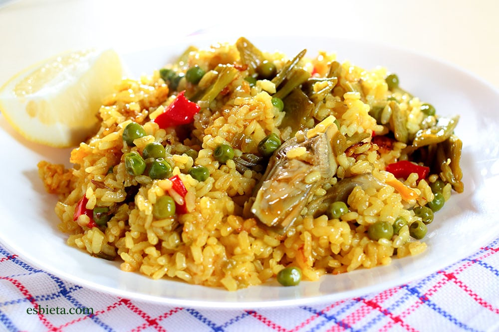

Pizza Margherita
Pizza Margherita
Ingredientes
| Ingredientes | Cantidades |
|---|---|
| Harina | 500 Gramos |
| Agua | 300 ml |
| Levadura | 25 Gramos |
| Aceite | 2 cucharadas soperas |
| Sal | Cucharada chiquita |
| Salsa de tomate | 200 ml |
| Queso | 300 Gramos |
| Oregano (opcional) | A gusto arriba del Queso |
Paso a Paso hecho a mano
1. Preparar la levadura Coloca los 25 g de levadura en un recipiente. Agrega un poco de los 300 ml de agua tibia y mezcla hasta disolverla.
2. Hacer la masa Coloca los 500 g de harina en un bowl grande. Agrega la cucharadita de sal y mezcla. Añade la levadura disuelta, el resto del agua y las 2 cucharadas de aceite. Mezcla todos los ingredientes hasta formar una masa.
3. Amasar Coloca la masa sobre una mesa limpia y amasa durante unos 10 minutos, hasta que quede lisa y elástica.
4. Dejar levar Forma una bola con la masa y colócala en un recipiente. Cúbrela con un paño limpio. Déjala reposar entre 45 minutos y 1 hora, hasta que duplique su tamaño.
5. Formar la pizza Precalienta el horno a 220 °C. Aceita una pizzera o bandeja para horno. Estira la masa con las manos o un palo de amasar hasta darle la forma deseada. Colócala en la pizzera.
6. Prehornear la masa Lleva la masa al horno durante 8 a 10 minutos para que tome consistencia.
7. Agregar los ingredientes Retira la masa del horno. Distribuye los 200 ml de salsa de tomate sobre la superficie. Agrega los 300 g de queso de manera uniforme. Si lo deseas, espolvorea orégano por encima.
8. Hornear Vuelve a llevar la pizza al horno. Cocina durante 10 a 15 minutos, o hasta que el queso esté derretido y los bordes estén dorados.
9. Servir Retira la pizza del horno. Déjala reposar 2 o 3 minutos. Córtala en porciones y sírvela caliente.
🍕 Tiempo total aproximado: 1 hora y 30 minutos (incluyendo el levado de la masa).
Paso a Paso Video
Paso a Paso

Pollo al horno con papas
Como cocinar Pollo al horno con papas
Ingredientes
| Ingredientes | Cantidades |
|---|---|
| Pollo (patas-muslos o pechugas) | 2 unidades |
| Papas | 4 medianas |
| Ajo | 2 dientes |
| Aceite de oliva | 2 cucharadas soperas |
| Sal | Al gusto |
| Pimienta | Al gusto |
| Pimentón (opcional) | Al gusto |
Paso a Paso hecho a mano
1.Precalienta el horno a 200 °C.
2.Mezcla el aceite, ajo, pimentón, orégano, sal, pimienta y limón.
3.Unta el pollo con la mezcla por todos lados.
4.Coloca las papas en una bandeja para horno y sazónalas con un poco de aceite, sal y pimienta.
5.Pon el pollo sobre las papas.
6.Hornea durante 60–75 minutos, o hasta que el pollo esté dorado y bien cocido (la temperatura interna debe alcanzar 75 °C).
7.A mitad de cocción, baña el pollo con sus propios jugos para que quede más jugoso.
8.Deja reposar 5 minutos antes de servir.
Consejo:Si quieres más sabor, añade cebolla en gajos, zanahorias o ramas de romero junto con las papas.
Paso a Paso Video
Paso a Paso

Salteado de arroz con verduras y huevo
Como cocinar Salteado de arroz con verduras y huevo
Ingredientes
| Ingredientes | Cantidades |
|---|---|
| Arroz cocido | 2 tazas |
| Zanahoria | 1 unidad |
| Cebolla | 1 unidad |
| Morrón | 1 unidad |
| Huevos | 2 unidades |
| Salsa de soja (opcional) | Al gusto |
| Aceite | 2 cucharadas soperas |
Paso a Paso hecho a mano
1.Lava y pela la zanahoria.
2.Corta la zanahoria, la cebolla y el morrón en cubitos pequeños.
3.Calienta un poco de aceite en una sartén grande a fuego medio.
4.Agrega las verduras y saltéalas durante 5 a 7 minutos, hasta que estén tiernas.
5.Incorpora las 2 tazas de arroz cocido y mezcla bien con las verduras.
6.Empuja la mezcla hacia un lado de la sartén para dejar un espacio libre.
Rompe los 2 huevos en el espacio libre y cocínalos revolviendo hasta que estén listos.
Mezcla los huevos con el arroz y las verduras hasta integrar todos los ingredientes.
Agrega salsa de soja a gusto (opcional) y mezcla nuevamente.
Cocina durante 1 o 2 minutos más para que los sabores se integren.
Retira del fuego y sirve caliente. 🍚🥕🥚